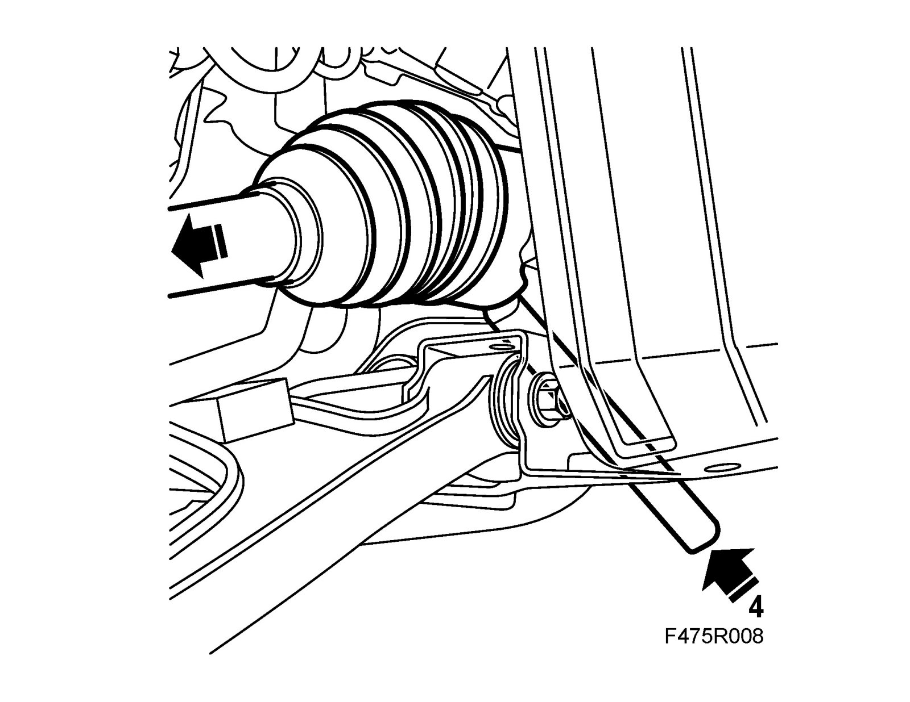
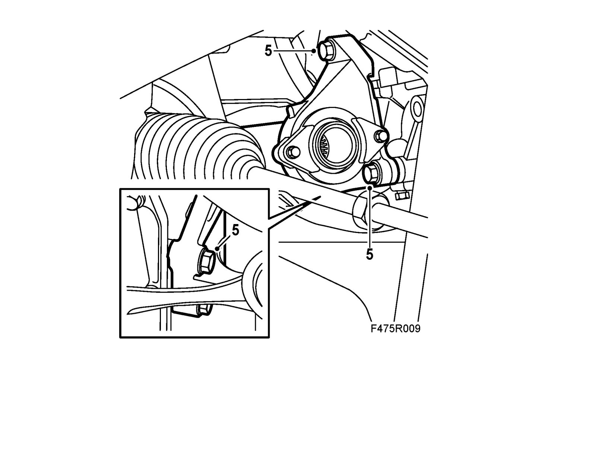
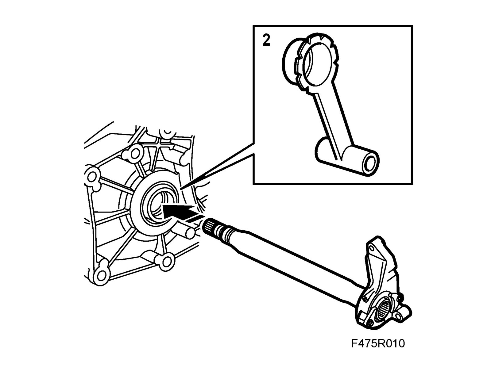
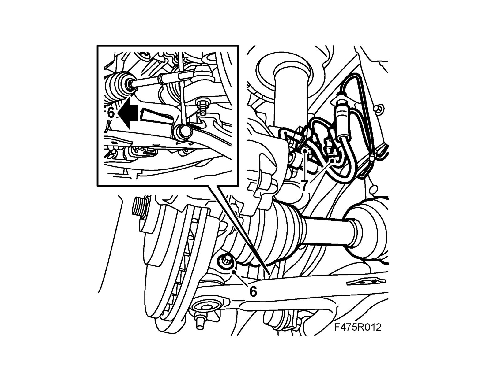

Support - Half Shaft/Short Shaft: Service and Repair
Intermediate shaft, 4-cyl petrolTo remove
1. Raise the car and remove the wheel.
2. Remove the steering swivel member bolt, lower the suspension arm and place a 83 95 238 Wedge between the suspension arm and the anti-roll bar.
3. Detach the brake hose from the clip and the ABS cable holder. Turn the wheel for better access. CV: Remove Chassis reinforcement, front subframe, CV.
4. Tap out the drive shaft from the intermediate shaft with a brass drift and mallet. Move the drive shaft out of the way.

Warning
Use protective goggles to protect against flying splinters of metal.
Tightening torque 47 Nm (35 lbf ft)
5. Remove the intermediate shaft bracket and pull out the intermediate shaft from the gearbox. Collect the oil in a receptacle.

To fit
1. Change the intermediate shaft seal in the gearbox, see Drive shaft seal, right hand.
2. Place a 83 95 162 Protective collar, drive shafts in the shaft seal. Insert the intermediate shaft into the gearbox until about 20 mm is left. Pull out the collar and push in the rest of the intermediate shaft.

3. Fit the shaft bracket.
Tightening torque 47 Nm (35 lbf ft)
4. Lubricate the drive shaft splines with 90 513 210 Universal paste and make sure the rubber seal is on the shaft.
5. Insert the drive shaft into the intermediate shaft. Make sure the circlips snap in place.
Important
Press up the pin carefully.
The groove in the pin must be visible in the screw hole in the spindle housing.
If the rubber gaiter is pressed down, it will not seal properly to the swivel pin.
6. Remove the wedge and attach the ball joint to the steering swivel member with a bolt and nut. The pin must be visible above the steering swivel member before the bolt is fitted. Tighten the nut.
Tightening torque 50 Nm (37 lbf ft)

7. Fit the brake hose clip and the ABS cable holder. CV: Fit Chassis reinforcement, front subframe, CV.
8. Fit the wheel. See Wheels.